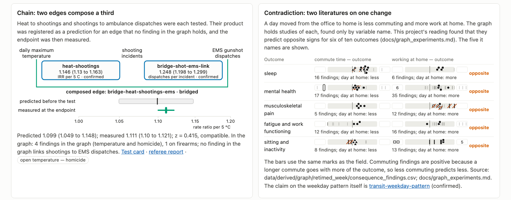

Edges compose, contradict, share papers, and are modified by third variables

The chain is a weak test: about a third of the endpoint’s events are also the first link’s events. 44 of 625 papers sit on two or more edges, so those edges are not independent evidence.